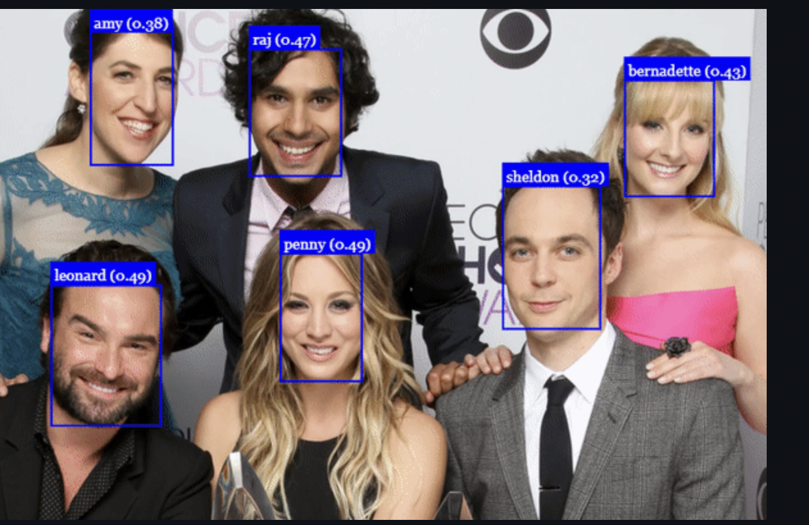
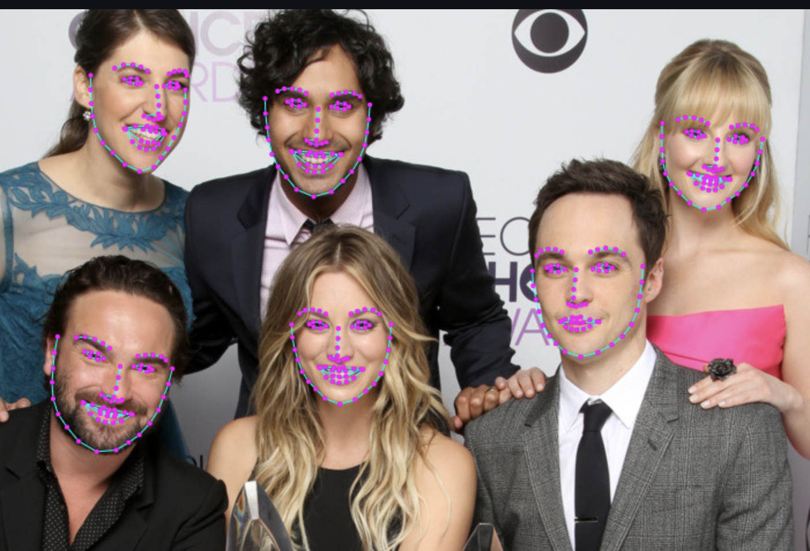
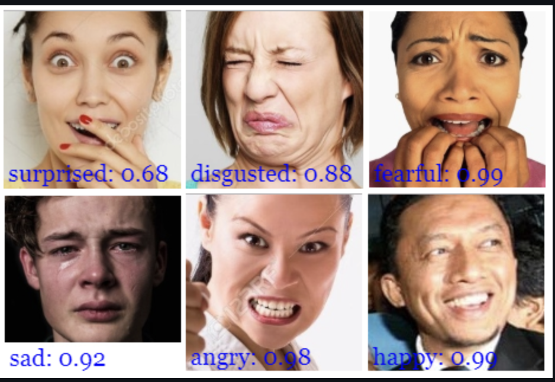

Three Models are used to:
 For face detection, this project implements a SSD (Single Shot Multibox Detector) based on MobileNetV1. The neural net will compute the locations of each face in an image and will return the bounding boxes together with it's probability for each face. This face detector is aiming towards obtaining high accuracy in detecting face bounding boxes instead of low inference time. The size of the quantized model is about 5.4 MB (ssd_mobilenetv1_model).
 For face recognition, a ResNet-34 like architecture is implemented to compute a face descriptor (a feature vector with 128 values) from any given face image, which is used to describe the characteristics of a persons face. The model is not limited to the set of faces used for training, meaning you can use it for face recognition of any person, for example yourself. You can determine the similarity of two arbitrary faces by comparing their face descriptors, for example by computing the euclidean distance or using any other classifier of your choice.
 The face expression recognition model is lightweight, fast and provides reasonable accuracy. The model has a size of roughly 310kb and it employs depthwise separable convolutions and densely connected blocks. It has been trained on a variety of images from publicly available datasets as well as images scraped from the web. Note, that wearing glasses might decrease the accuracy of the prediction results.